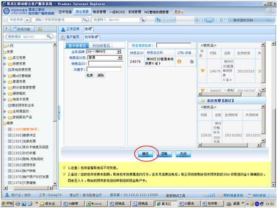

1、进入方式
在“请输入手机号码查询”处输入客户的手机号码，点击查询按钮，点击“产品订购信息”内显示的任意客户信息，在右侧“客户服务”栏点击“1258包年取消”。
2、界面形式及操作步骤说明
（1）在“请输入手机号码查询”处输入客户的手机号码，点击查询按钮，点击“产品订购信息”内显示的任意客户信息，在右侧“客户服务”栏点击“1258包年取消”。
（2）点击“下一步”。
（3）点击“输入”，由客户通过密码小键盘输入服务密码。
（4）根据客户需求在“销售品检索区-基本销售品”处选择“业务品牌”，点击“检索”。
（5）在可选销售品展示区内将列出包年取消后所执行的标准资费，点击“订购”，在“本次受理［订购］”中将列出本次受理的业务及生效时间和失效时间。
（6）点击“确定”。

（7）根据客户本次是否办理多个业务，点击“打印”或“合并打印”或“打印存储”。
（8）点击“确定”提交本次操作。